为什么用 AI
高频、规模化、规则可描述但人工成本高的任务优先；机制本身更关键的，先解决产品问题。
我所在 融媒体项目中心 深度对接央视频 APP。央视频覆盖直播、长短视频等资源，其中体育资源占比超 70%。 围绕平台三类非常鲜明的内容优势——体育赛事·人物、剧集纪录片等长内容、各类文化 IP 栏目—— 我探索了三个新场景，落地了三个项目：运动员搜索优化、摇一摇推剧、AI 文化小游戏。 所有项目都在回答同一个问题：如何借助 AI，让央视频存量优质内容更好地被组织、发现和消费。
不是"哪里都加 AI"，而是先判断任务特性，再设计人机分工和验证闭环。
高频、规模化、规则可描述但人工成本高的任务优先；机制本身更关键的，先解决产品问题。
AI 承担内容生成、代码实现、批量处理；产品负责问题定义、机制选择与价值判断。
准入规则、候选池、概率约束、人工审核、可编辑后台，把不确定输出收敛为可运营能力。
先用 Demo 验证机制，再用数据校准判断，沉淀为可复用能力。
融媒体项目中心聚焦央视频搜索 / 内容分发 / 小游戏三大方向，3 个项目 AI 全程贯穿。
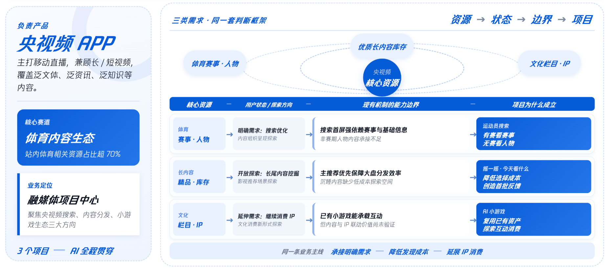
左：央视频资源结构（直播、长短内容、泛文体/资讯/知识）。中：三类核心资源（优质长内容库存 / 体育赛事·人物 / 文化 IP·栏目）。 右：现有机制下的能力边界，以及三个项目对应的"为什么立"。同一套业务主线——「承接明确需求 → 降低促成成本 → 延展 IP 消费」。
从搜索场景切入——让赛期之外的"人物兴趣"被组织、被看见、被消费。
赛期央视频体育搜索可以很好承接赛程赛事；但赛事结束后，用户对运动员的兴趣仍在，搜索结果却内容零散、缺少结构化整理。
用 AI 做主题化看点聚合，在搜索首屏直接呈现人物核心内容。生产侧 AI 完成召回、组装、评测与持续更新；运营侧通过看板审核、调整、发布。形成一套「AI 生产 + 人工可控 + 可持续迭代」的完整工作流。
覆盖十余个乒乓球运动员 Query，点击 +36%、UV +27%。规模化推广后，预计覆盖全站 25% 搜索 QV，带来全站 5-9% 的点击增益。
聚合卡同时承担搜索答案与连续消费入口——承接无比赛低谷期的人物兴趣。
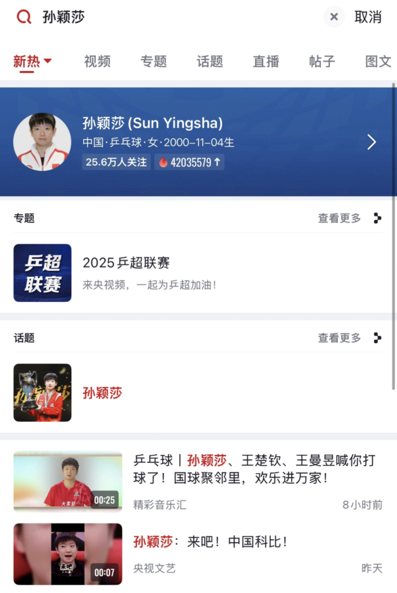
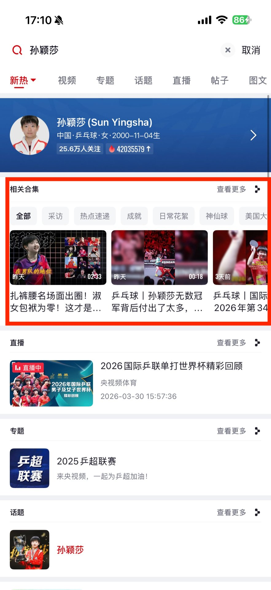
世界杯要按时间线整理梅西的进球合集——人工要筛选上百条视频，核对时间、排序去重，人力成本巨大。
可预估用户可能点哪个，但不保证专题的完整性、事件顺序。
语义理解和批量处理补足完整性；热点触发增量更新保证实时性；模板化工作流降低边际成本。
聚合卡为核心回答方式，带来整页全面提升。
承接原本分散的短视频 + 提供入口。
聚合卡成为主要流量入口，承担一半以上贡献。
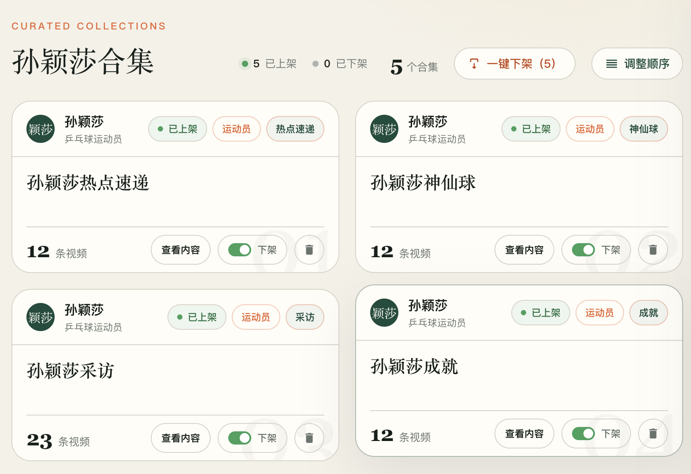
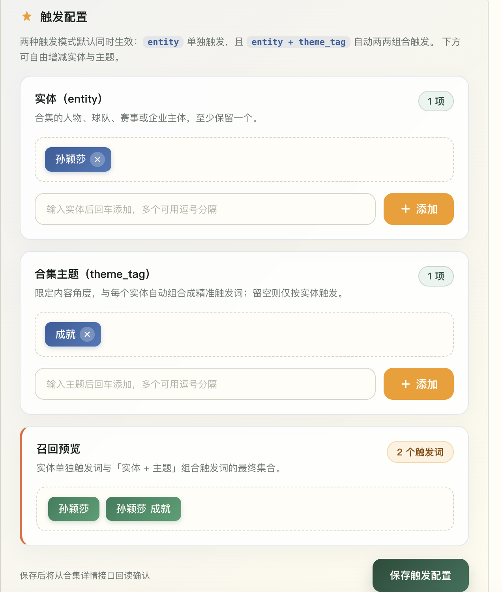
复用成本 = 0 新增研发；AI-Native 工作流自动闭环。
QV 占比 4.62% · 点击 +36%
QV 占比 25-30%
全站点击 +5~9%
被产品化的不是一次模型输出，而是"生产—审核—发布—评测—迭代"的反馈闭环。AI 解决完整性、实时性、规模化；AI 解决不了的规则、机制、可干预——所以才有了研究员/编辑/质检员/更新器四角色 + 人工控制面。
为长内容创造"主动选择 + 趣味互动"的新发现入口。
央视频拥有大量优质剧集、纪录片等资源，但长内容用户覆盖不足 1%；万余档节目中，日播放超过 100 的只有约 500 档。这里既有业务分发约束，也有用户选择问题。
主推荐以单视频分发为主，长内容与短视频在同一流中竞争，完整专辑的承接相对较弱；历史行为只能体现用户长期偏好，很难捕捉当下瞬时模糊的观看诉求。
作为主推荐补充的探索场景——承接主动发起的即时探索，也可自选题材、心情、场景，解决"不知道看什么"的模糊需求；盲盒式趣味互动，降低决策负担；采集收藏等深度行为信号，回流给推荐系统。
我的判断：不能只优化主排序，而要为"长内容专辑"建立独立的主动探索通道，让用户替内容做"一次选择"。同时支持 Banner、运营位灵活部署，内容池与入口完全独立管控，可以触达算法链路覆盖不到的更多用户。
不是堆功能，而是把"长内容被看见"拆成可验证的三段链路。


持续稳居央视频小应用榜单 TOP1。
轻量盲盒入口验证"替我选"的真实需求。
用户主动选的内容，转化率显著高于被动曝光。
"千人千盒"阶段预计上升。
真实使用数据验证"轻决策"并非噱头。
从发现到消费的完整链路被验证。
这个项目的核心不是让 AI 推荐，而是先把"主动探索"做成可控的产品机制。AI 的真正价值在 Vibe Coding——把机制迅速做成可体验 Demo，提前验证标签是否易懂、开盒路径是否顺畅，避免在需求文档阶段反复空转。
不同来源用户在不同消费阶段的损耗不同，不能笼统说"转化不好"。
首搜次索、命中、连续消费、时长
22.1% 千UV播放用户来源承接、播放增量与场景匹配
6% 千UV播放用户命中率、消费深度与会员续费
专辑续播 / 会员连续消费关键洞察：传统主推荐的马太效应让长尾内容越来越难被看见。解法是搭建独立旁路探索通道——长尾内容先在此获取真实行为信号，校验后回流主推荐参与排序。
把单纯视频观看拓展为互动式 IP 消费——让文化真正融入玩法、关卡规则。
央视频已有成熟小游戏生态，站内100+ 小游戏；但大多复制商业小游戏，缺少有平台辨识度的新玩法。
暑期儿童/家庭活跃，热赛事供给不足阶段，正是补充长线互动内容的窗口期。
同时拥有《中国诗词大会》这类头部文化 IP，可承接"边玩边消费内容"的互动场景。
核心玩法循环：选字兵 → 章节路径 → 守护关 → 通关奖励 → 诗人详情 → 星空图 → 真实地名地图。
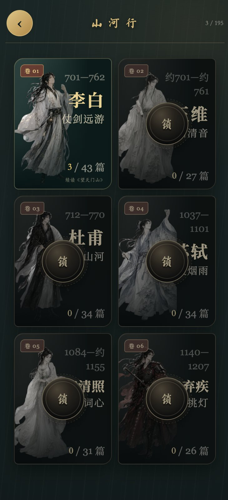
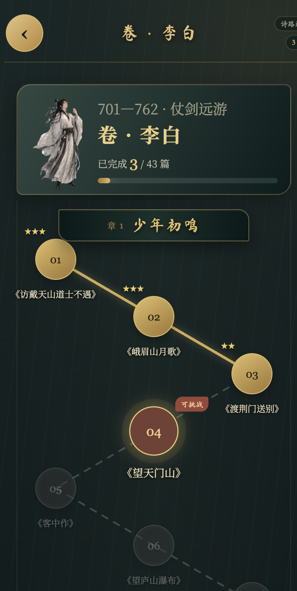
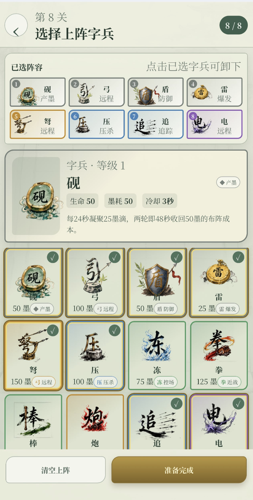
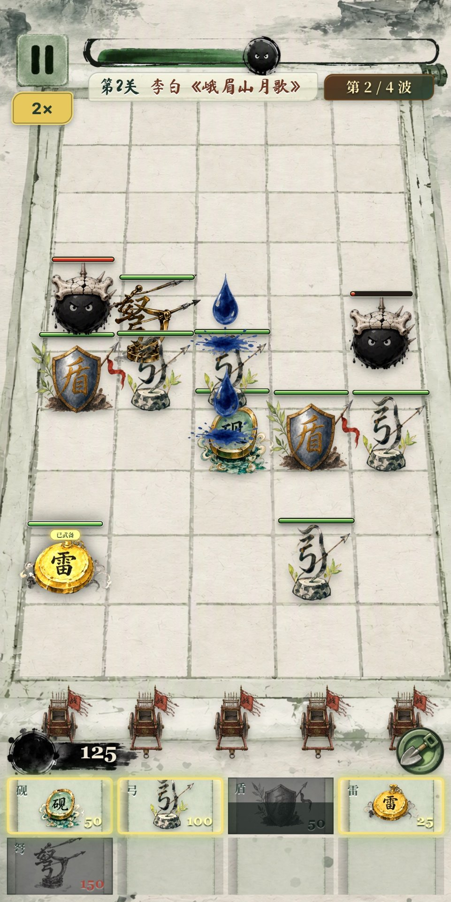
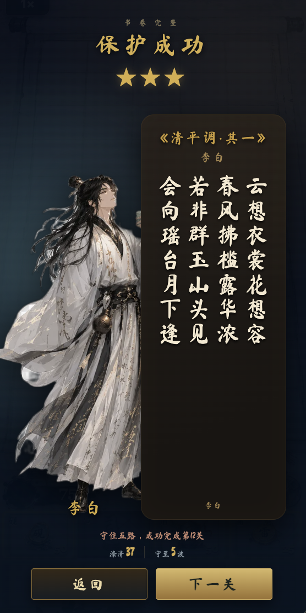
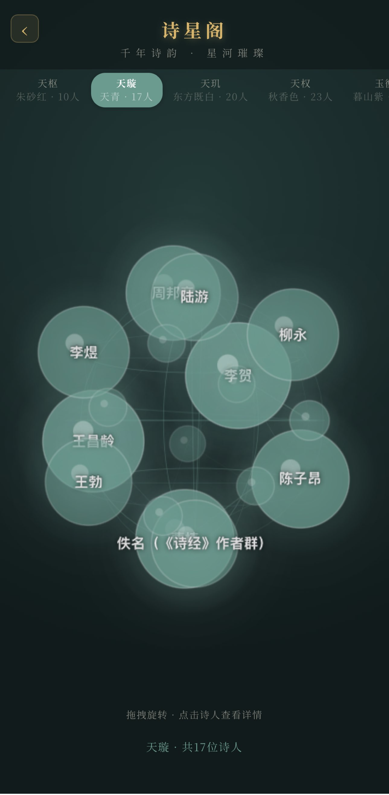
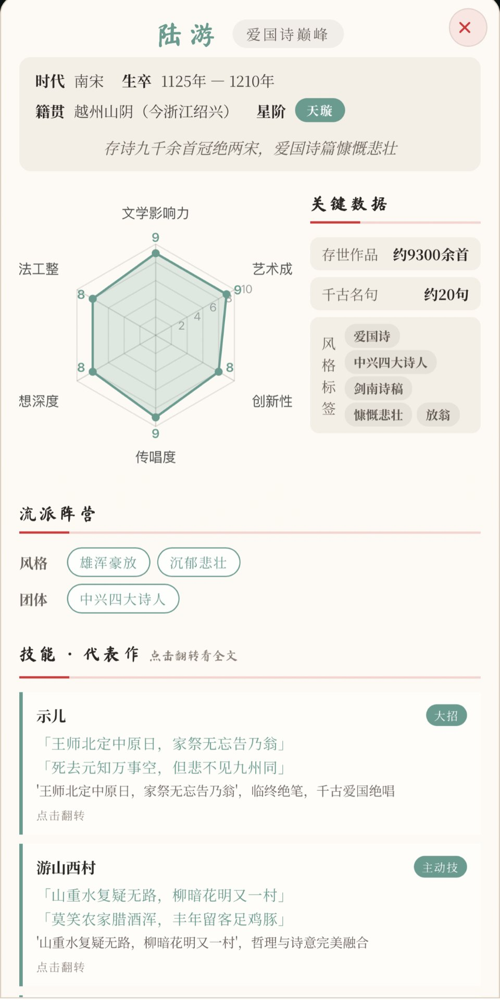
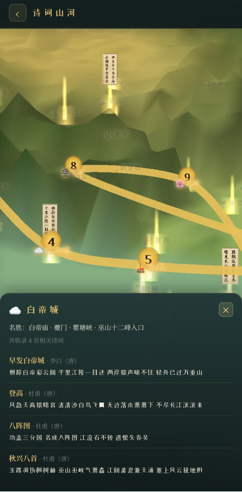
GPT-Image-2 生成视觉素材，复用 GitHub 开源资源，AI 辅助代码与骨骼动画；我负责世界观、玩法、规则与验收。
AI 单轮指令可以完成得很好，但容易产生局部完成度幻觉：单看每一轮输出没问题，多轮迭代后旧规则被覆盖、边界场景缺失，造成整体逻辑失真。根因是 AI 只对本轮指令负责，不会主动持有全局规则。
Given 玩家有 50 阳光
When 放置豌豆射手
Then 消耗阳光并生成植物
开发前用 Given—When—Then 定义行为契约，把自然语言需求转为可验收规则，先消除规则歧义。
梳理边界条件与失败用例：资源不足、格子占用、状态冲突时如何处理。
发生规则冲突由产品明确取舍优先级；只让 AI 修改最小代码范围，控制变更半径。
用成品反向校验业务初始规则——发现 AI 是否悄悄改变全局逻辑。
局部完成 ≠ 整体成立。Demo 能证明方案可实现，但不能证明用户需求和业务增量；它是决策对象，不是最终作品。验收标准 = 正常路径 + 边界条件 + 异常反馈。
三个项目不是孤立的功能，而是在验证同一条增长路径：让权威供给可计算，让消费场景互相联动，让一次观看沉淀为长期关系。
通过语义理解、内容结构化和动态更新，让内容不再只是文件，而是可召回、可组合、可运营的资产。
搜索聚合、长尾探索和互动玩法共同推动分发从一次曝光转向循环消费。
将点击、播放、留存和会员转化回流到内容与策略层，形成可持续增长闭环。
从内容生态理解增长，从搜推增量做跨场景联动，从 AI 应用到独立产品交付。
既是长短视频深度用户，也是内容产品实践者；能从内容生态理解需求，把洞察转成可上线功能，完成 IP 化、互动化的抽象迁移。
关注搜推跨场景联动、深度消费和用户关系沉淀，而不只盯 CTR；能够把单点增量放回完整内容增长链路。
既能搭建 Bot、看板和内容生产工作流，也能完成 UI、Demo 与轻量产品全流程开发；把 AI 能力落到真实业务结果。
诚实反思 + 未来规划：AI 时代产品策划的判断力与落地力。
过去对"AI 能做什么"的探索快于对"AI 不该做什么"的判断；存在"出了问题再补流程"，缺少人 / AI 决策分界、验收标准归属与不可逆风险识别的前置思考。
三个项目独立推进，踩坑与方法论没有及时沉淀为团队可复用资产；下一步要把规则契约、评测框架和工具链变成组织能力。
让算法可审可改可发；用可体验的实物替代需求文档；先把供给组织好，再设计交互细节。
把有效方案抽象为可审、可改、可发的工作流，或可快速复用的开发方法，形成可持续价值。
正确的问题定义 × 清晰的人机边界 × 可验证的反馈回路 × 可复用的产品能力
完成角色转换，吃透央视频业务全貌；系统梳理搜索/推荐/内容业务全景，建立产品认知地图；稳定运营现有项目，持续迭代。
从"个人做成"升级为"组织复制"；沉淀 AI 产品方法论、搜索/推荐/内容工具集并团队内部分享；AI 生产链路拓展至更多垂类。
AI 从「实验项」变成「基础设施」：搜索可复用 · 内容可度量 · 可扩展；搜推/互动/运营多场景组装分发。